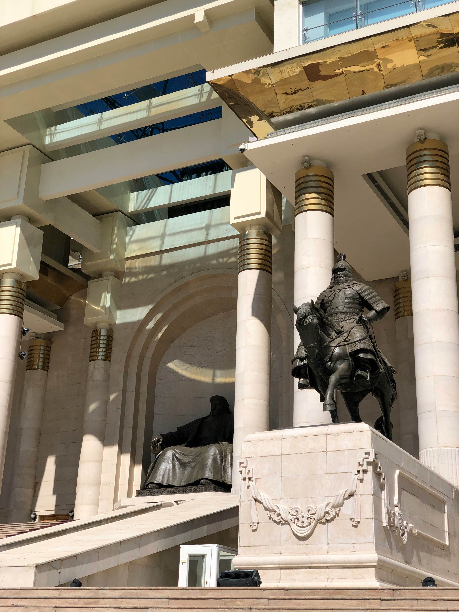

My name is Zane Wilcox and I was born in the United States. I reside in Mongolia where I work as a full-time English teacher. My wife and I are currently expecting a little girl in the Spring of 2025. I have lots of things that I enjoy such as playing all kinds of games with family and friends, and anything outside like camping and fishing.


Mongolia is often known as the land of horses and meat. The people here have a lifestyle that consists of their native nomadic roots combined with modern day conveniences and technologies. The populaton is roughly 3 million whereas the horse population is 4.8 million and many of them are wild. The majority of the population lives in a round, portable housing structure called a 'ger'.